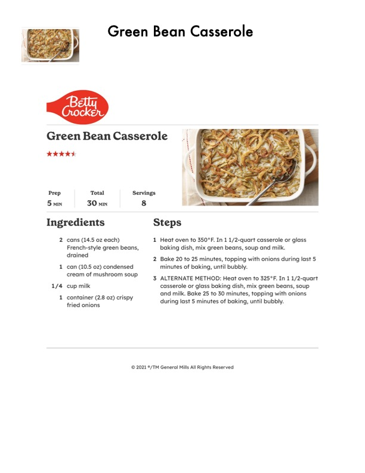

Green Bean Casserole

Original cookbook page 243
Ingredients
- French-style green beans,
- drained
- cream of mushroom soup
- 1/4 cup milk
- 1 container (2.8 oz) crispy
- fried onions
- Heat oven to 350°F. In 1 1/2-quart cas
- baking dish, mix green beans, soup ar
- Bake 20 to 25 minutes, topping with ot
- minutes of baking, until bubbly.
- ALTERNATE METHOD: Heat oven to 32
- casserole or glass baking dish, mix gre
- and milk. Bake 25 to 30 minutes, toppi
- during last 5 minutes of baking, until k
Instructions
- cans (14.5 oz each) can (10.5 0z) condensed cream of mushroom soup Heat oven to 350°F. In 1 1/2-quart cas Bake 20 to 25 minutes, topping with ot
Recipe #243 from collection